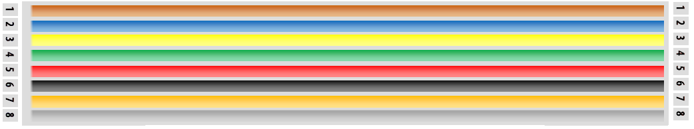

Connections to the modem
Idirect:
The Idirect modem is connected to the arbitrator via a straight though RJ45 cable. Modem on the left and Arbitrator on the right.
| Pin 1 | Not used |
| Pin 2 | Modem lock, when the modem has RX lock this pin will go from high voltage to low voltage.
We call this modem low lock. For this function to work you must have system type 2 added in the DAC system type or low lock in the MXP and RX lock on.
The arbitrator does not use this RX lock and passes the voltage state on to the DAC or MXP.
I.E. No RX lock = 12Vdc between pin 2 and pin 4.
RX lock = 0Vdc between pin2 and pin 4.
|
| Pin 3 | Not used |
| Pin 4,5 | GND |
| Pin 6 | GPS to the modem. |
| Pin 7 | TX mute, this is controlled by the arbitrator not the DAC or MXP.
For this modem, the mute is activated when the voltage is high. In the Arbitrator there is a Mute Output polarity this should be set to high voltage mute.
I.E. TX mute active, no TX = 12Vdc between pin 7 and pin 4.
TX mute not active, TX allowed = 0Vdc between pin7 and pin 4. |
| Pin 8 | Not used |
Click image to enlarge.